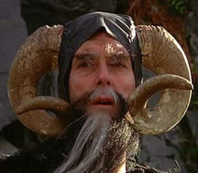
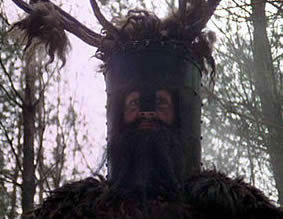
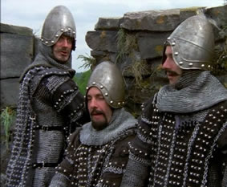

In our most recent encounter, we met a rather eccentric fellow
named Tim the enchanter, a conjurer who appears to be able to bring
forth flames from his finger tips. What manner of man is this? We
were suspicious from the very beginning, but unfortunately we need
to trust his word, as he is the only lead we have. He said that we
need to travel to the nearby caves, as etched on their walls we can
find a clue as to the location of the Grail. But we must beware the
dreaded Rabbit of Caerbannog…

Our journey through a dark foreboding forest involved a terrifying
encounter with a group of warriors calling themselves the Knights
who say Ni
. They are the keepers of the sacred words Ni
, Peng
and Neee-Wom
. They threatened us with their deadly words,
saying that they would only let us through the forest alive if we
went to get them a shrubbery. Those who hear the sacred words seldom
live to tell the tale…

Today we suffered a tragic defeat! Our hunt for the grail took
us to a French-occupied castle — we hoped that the soldiers there
could help us find the grail, but instead relations went from bad to
worse! We were taunted using a variety of exotic insults, one of our
faithful steeds was killed when they catapulted a cow on top of us,
and Sir Bevedere's clever plan involving hiding inside a trojan
rabbit, getting them to bring it inside the castle, then bursting
out when we were inside failed. We forgot to hide inside the rabbit.